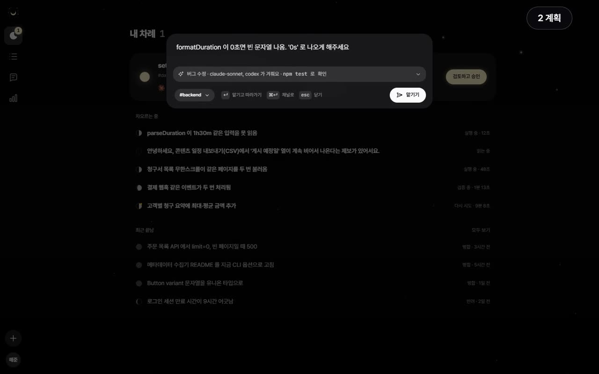
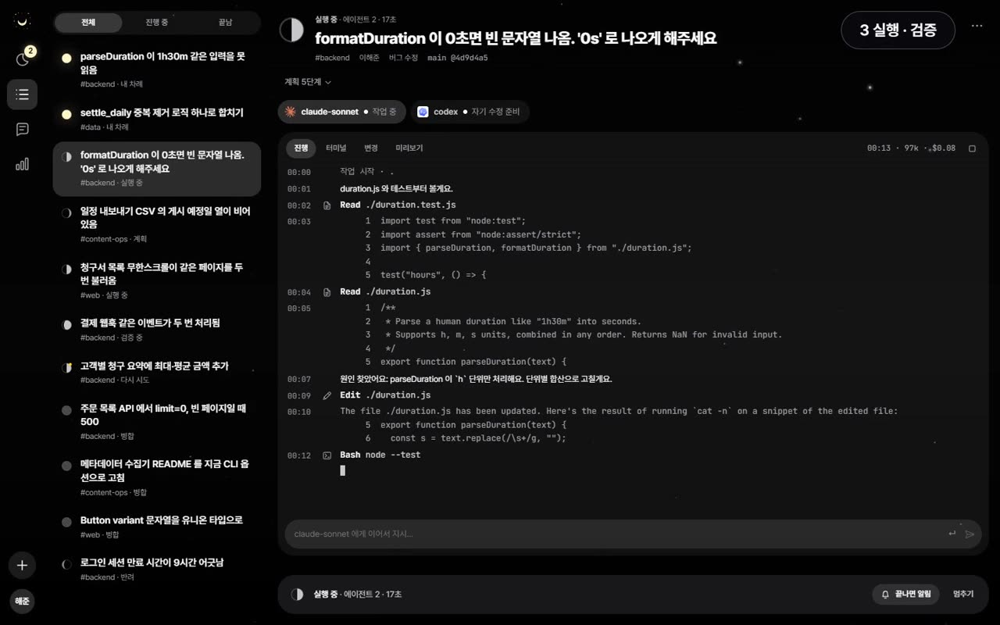
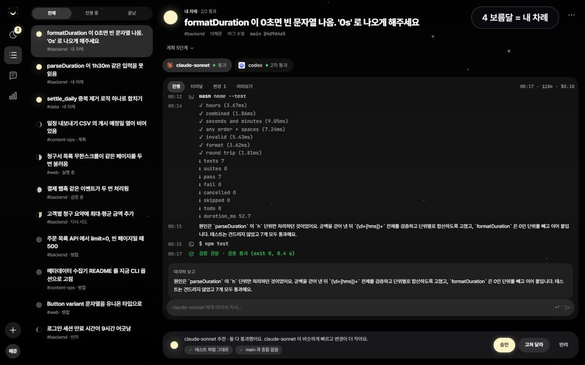

프로젝트
 willnew
willnew
한 줄로 맡긴 코드 수정을 AI 에이전트가 하고, 테스트를 통과한 수정만 승인 버튼과 함께 올라오는 도구
| 결과 | 맡기기부터 병합까지 약 47초 (실제 Claude Code, 1건) · 요청 3건 중 2건 병합, 검증 실패 1건은 승인 차단 |
|---|
| 기술 | TypeScript · React · Hono · vitest |
|---|
| 코드 | 검증 판정 · E2E 테스트 · 측정 근거 · 저장소 |
|---|
이럴 때 씁니다
-

1맡기기 · 계획
- #backend 채널이나 ⌘K에 「formatDuration이 0초면 빈 문자열 나옴. '0s'로 나오게 해주세요」
- 계획 에이전트가 '버그 수정 · claude-sonnet과 codex가 겨룸 · npm test로 확인'으로 정리
-

2실행 · 검증
- 에이전트마다 따로 만든 git 워크트리에서 코드를 읽고 고침. main은 그대로
- 끝나면 willnew가 npm test를 직접 돌려 판정. 실패하면 로그를 붙여 한 번 더 시킴 (영상의 codex는 두 번째에 통과)
-

3내 차례 · 결정
- 통과한 결과만 첫 화면 '내 차례'에 올라오고, 더 빠르고 변경이 작은 쪽을 추천
- '테스트 파일 그대로 · main과 충돌 없음'을 보고 승인하면 main에 병합. 고쳐 달라 · 반려도 한 번에
Claude Code를 직접 쓸 때와 다른 점
Description
- 배경 에이전트가 "끝났다"고 해도 그대로 병합할 수 없음. 테스트를 다시 돌리고 diff를 열어 보고, 실패하면 로그를 복사해 다시 시킴. 테스트 기대값을 바꿔 통과시키는 경우도 있어 테스트 파일까지 봐야 함
- 구현
- 채팅 · ⌘K 요청 → 계획 에이전트(Haiku)가 유형 · 지시문 · 검증 명령으로 변환
- Claude Code · Codex CLI를 각자 git 워크트리에서 실행, 겨루면 시간 · 비용 · 변경 크기로 하나 추천
- 진행 단계를 달이 차는 모양으로 표시. 보름달(사람이 결정할 차례)이 뜬 일만 첫 화면에 모음
- 검증
- 판정은 검증 명령 종료 코드. 테스트 파일을 고쳤거나 main과 충돌하면 검토 화면을 거쳐야 승인
- 테스트 20개 — 오프라인 에이전트로 실행 · 재작업 · 충돌 확인 · 터미널까지
- 성과 실패 테스트 7개짜리 예제 저장소에 요청 3건 — 2건 병합(1건은 재작업 후 통과), 1건은 재작업 후에도 실패해 승인까지 가지 않음 · 총 $0.55
- 한계 계정이 없어 지금은 한 사람이 자기 PC · 자기 구독으로 씀. 한 사람 구독으로 팀원 요청을 처리하는 건 Anthropic 이용 조건에 맞지 않아, 팀원마다 자기 PC에서 실행하는 구조(허브 · 러너)를 설계 중
화면 8개 보기
 내 차례
내 차례
 진행 중인 작업
진행 중인 작업
 결과 미리보기
결과 미리보기
 검토와 결정 바
검토와 결정 바
 맡기기와 계획 한 줄
맡기기와 계획 한 줄
 팀 채널에서 맡기고 승인
팀 채널에서 맡기고 승인
 결과를 지표로 확인
결과를 지표로 확인
 휴대폰 내 차례
휴대폰 내 차례
실측 상세 · 요청 3건 (2026.09.30)
Windows 11 · Claude Code 2.1 · Codex CLI 0.151. 예제 duration 저장소(실패 테스트 7개)에서 시작한 소규모 실측 · 화면은 데모 모드에서 촬영
2026.10.12 새 화면으로 실제 Claude Code를 돌려 다시 확인: 요청 1건, 맡기기부터 병합까지 약 47초.
절약 시간은 템플릿 가정치(실측값 아님)
 wasnew
wasnew
AI 에이전트가 내 폴더에서 옮기고 지운 파일을, 작업 단위로 한 번에 되돌리는 도구
| 결과 | 테스트 78개 · MCP 도구 12개 · 의존성 0개 · 이동 2,625건 되돌리기 2.9초 |
|---|
| 기술 | TypeScript · Node 20+ · MCP(stdio) · GitHub Actions(ubuntu·windows·macOS × Node 20·22) |
|---|
| 코드 | 계획 · 승인 · 적용 · 크래시 복구 · MCP 도구 · 저장소 |
|---|
이럴 때 씁니다
- 1에이전트가 폴더를 정리
"다운로드 폴더 정리해 줘" — 파일을 여러 폴더로 옮기고 일부는 지움. git 저장소가 아니라 git으로는 되돌릴 수 없음
- 2wasnew가 전부 기록
이동마다 원래 위치 · 에이전트 · 사유를 저널에 남김. 지우기는 휴지통으로 옮기기만 함
wasnew_move · wasnew_trash
- 3한 번에 원래대로
결과가 마음에 안 들면 그 작업 묶음을 통째로 되돌림. 그 사이 원래 자리에 새 파일이 생겼으면 덮어쓰지 않고 건너뜀
wasnew undo --batch
git과 다른 점
Description
- 배경 Claude Code의 체크포인트는 에이전트가 직접 편집한 파일만 되돌림. 셸에서 실행한 rm · mv, git 밖 폴더(다운로드 · 바탕화면)는 되돌릴 방법이 없음
- 구현
- 에이전트가 mv · rm 대신 MCP 도구(wasnew_move · wasnew_trash)를 부르면 원래 위치 · 에이전트 · 사유를 저널에 남김
- 스냅샷(sha256) · 이동 저널 · 휴지통으로 작업 묶음 단위 되돌리기
- 셸의 rm · mv는 선택형 훅(PreToolUse)이 막고 wasnew_trash를 쓰라고 돌려보냄. 승인 도구는 MCP에서 빼서 에이전트가 스스로 승인하지 못함
- 검증
- 사용자 파일을 지우지 않음. 진짜 삭제는 사람이 empty-trash 할 때만
- 테스트 78개 · CI 3개 OS × Node 2개 버전
- 성과 이동 2,625건 2.9초 · 같은 묶음 되돌리기 2.9초 (Linux 1대, 3회 중앙값)
- 한계 훅은 명령 문자열만 보므로 스크립트 안에서 지우는 건 못 막음. 실제 Claude Desktop · Claude Code에 붙인 사용은 아직 시험 전
웨이퍼 맵 불량 패턴 판독 에이전트
웨이퍼 맵을 넣으면 쉬운 건 바로 판정하고, 처음 보는 패턴이나 깨진 맵은 LLM 에이전트가 도구로 조사해 새 패턴 후보 · 맵 이상 · 사람 확인으로 나누는 판독 시스템
| 구분 | 개인 · 2026.09 |
|---|
| 결과 | 처음 보는 패턴 감지 AUROC 0.92 (분류 확신도로는 0.55) · 아는 패턴 96장 중 판정을 낸 79장에서 78장 정답 |
|---|
| 기술 | PyTorch · 임베딩 kNN · Grad-CAM · Ollama(Qwen3.5 4B) |
|---|
| 데모 | 판독 화면 열기 |
|---|
| 코드 | 새 패턴 감지 · 판독 검사기 · 조사 에이전트 · 저장소 |
|---|

Description
- 배경 분류 모델은 처음 보는 패턴도 아는 패턴으로 높은 확신을 붙여 배정함(예: Edge-Ring을 91% 확신으로 Edge-Loc). 확신도로 새 패턴을 가려내면 AUROC 0.55, 동전 던지기 수준
- 구현
- WM-811K 웨이퍼 맵 → 판정 · 위치 · Grad-CAM · 비슷한 웨이퍼 5장 · 판독 카드
- 판정 · 위치 · 유사 사례는 코드가 계산하고, 로컬 LLM(Qwen3.5 4B)은 논문 근거가 있는 원인 표 안에서 원인 후보 · 점검 순서만 작성
- 모델 임베딩 거리로 처음 보는 패턴을 경고
- 경고가 켜졌거나 확신이 낮거나 맵이 깨진 웨이퍼는 조사 에이전트로. LLM이 분류 · 위치 · 비슷한 웨이퍼 · 이웃 로트 · 원인 표 도구 중 무엇을 부를지 정하고, 판정 · 새 패턴 후보 · 맵 이상 · 사람 확인 중 하나로 보냄
- 검증
- 불량 8종을 하나씩 빼고 학습해, 뺀 패턴을 가려내는지 평가 · 로트 단위 분할
- 판독 카드를 코드로 6가지 검사(판정 · 위치가 계산값과 같은지, 원인이 표 안인지, 표 밖 공정 용어가 없는지 등), 걸리면 재질문
- 에이전트가 근거로 적은 값이 실제 도구 결과와 다르면 코드가 제출을 거절. 새 패턴 후보는 이웃 로트 근거가 있어야 통과
- 성과
- 처음 보는 패턴 AUROC 0.55 → 0.92 (확신도 → 임베딩 kNN)
- 같은 120장에서 판독 카드 첫 답 규칙 통과 8% → 94% (프롬프트 3차 수정). 규칙을 지킨 비율이지 원인이 맞은 비율은 아님
- 160장 평가(파이프라인만 → 에이전트 혼합): 학습에서 뺀 패턴을 판정하지 않고 넘긴 비율 63% → 79%, 깨진 맵 20장 중 16장을 맵 이상으로 분류, 지어낸 근거 18건 거절
- 라벨 없는 맵에서 기존 9종에 없는 줄무늬 · 혼합 패턴 후보 발견
- 나중 로트에서 성능 하락(0.963 → 0.743) 확인
- 한계 아는 패턴 정답률은 파이프라인만 쓸 때보다 낮음(87% → 81%). 확신이 낮은 웨이퍼를 사람에게 넘긴 대가. 4B 모델이라 조사에 장당 수십 초
차체 용접 디지털 트윈 + AI 제조성 판정
신차 차체 설계안을 기존 용접 라인 로봇이 전부 용접할 수 있는지 AI로 먼저 걸러 내고, 못 하는 곳이 있으면 에이전트가 한국어 요청대로 고친 설계를 찾아 시뮬레이터로 확인하는 도구
| 결과 | 설계 1만 안 탐색 약 11시간 → 4.7분 · 용접 못 하는 타점 재현율 99.9% (학습에 없던 설계 200개) |
|---|
| 기술 | Python · KUKA KR210 기구학 · LightGBM · Ollama(Qwen3.5 4B) 도구 호출 |
|---|
| 코드 | 대리 모델 · 설계 수정 에이전트 · 테스트 · 저장소 |
|---|

Description
- 배경 설계안 하나를 로봇 시뮬레이션으로 확인하면 판정만 약 10초, 로봇 배정까지 약 3분. 설계 1만 안을 보려면 약 11시간(3코어)
- 구현
- 설계 변수 10개(플랜지 폭 · 첫 타점 거리 등) → 판재 15장 · 스폿 용접 타점 75개 생성
- KUKA KR210 기구학으로 타점마다 로봇이 닿는지 판정(관절 한계 · 간섭 · 접근 경로)
- LightGBM 대리 모델이 같은 판정을 설계 1개당 0.05초에
- 예시 설계안 A는 못 하는 타점 2개(S23, M00) → 플랜지만 넓힌 B도 2개 → 첫 타점 거리 80 mm · 실–B필러 간격 50 mm로 바꾼 C는 0개
- 검증
- 학습에 없던 설계 200개를 시뮬레이터와 대조. 첫 판 정밀도 93.4%에서 특징 계산 버그를 찾아 고친 뒤 100%
- AI가 추천한 20안을 시뮬레이터로 다시 돌려 18안 일치, 틀린 2안은 경계 바로 옆
- 설계 수정 에이전트
- 「플랜지 폭은 그대로, 첫 타점 거리는 60 이하」 같은 요청을 LLM(qwen3.5 4B)이 제약으로 바꾸고, 후보 탐색 · 시뮬레이션 · 제출 도구를 불러 가장 적게 바꾼 설계를 찾음
- 시뮬레이터가 못 하는 타점 0개를 확인한 설계만 제출 가능, 제약 위반은 코드가 거절
- 성과
- 1만 안 탐색 약 11시간 → 4.7분. AI는 1차 선별, 경계 근처는 시뮬레이터가 확정
- 에이전트: 시작 설계 12개 전부 시뮬레이터 확인까지 성공, 실행당 평균 66초. 단변수 훑기만 주면 8/12였고 후보 탐색 도구를 준 뒤 12/12
- 한계 변수 하나를 고정하면 에이전트 3/12, 전수 탐색 4/12. 제약 해석 12건 중 1건 틀림
신뢰성 시스템
위성 지상국 수신 처리기
위성이 지나갈 때 녹음한 전파 신호(IQ)에서 위성이 보낸 데이터 프레임을 꺼내는 수신 소프트웨어
| 결과 | 프레임 119장 복원 · 다른 복호기(gr-satellites)가 꺼낸 115장 전부와 바이트 일치 |
|---|
| 기술 | C# / .NET · SGP4 · DSP |
|---|
| 코드 | 도플러 보정 · 실제 패스 대조 · 저장소 |
|---|
Description
- 배경 저궤도 위성은 빠르게 지나가서 받는 주파수가 계속 바뀜(도플러). 이걸 따라가지 못하면 신호를 풀 수 없음
- 구현
- 큐브샛 ASRTU-1의 11분 패스 녹음(드빙겔로 25 m 전파망원경 공개 자료)을 입력으로
- 궤도(SGP4)로 주파수 변화를 예측해 보정 → 복조 · 복호를 C#으로 구현
- 검증 같은 녹음을 gr-satellites로 푼 115장과 바이트 단위 대조 · 시험 84개 · 뮤테이션 95.53%
- 성과 119장 복원 — 115장 전부 일치, 4장은 gr-satellites가 반송파를 찾던 구간에서 추가로 받음 · 도플러 예측 오차 RMS 5.1 Hz · 11분 패스 처리 약 20초
SpaceLink · CCSDS 다운링크
위성에서 내려온 비트열을 표준 규격(CCSDS)의 프레임 · 패킷으로 풀고, 손상됐을 수 있는 패킷은 내보내지 않는 처리기
| 결과 | 실제 위성 녹음에서 SatNOGS가 못 푼 6장 추가 복원 · 시험 139개 · 뮤테이션 94.65% |
|---|
| 기술 | C# / .NET · CCSDS · 테스트 139개 |
|---|
| 코드 | 표준 적합성 · libfec 대조 · 저장소 |
|---|
Description
- 배경 받은 비트열에는 손상된 프레임이 섞임. 손상된 패킷을 조용히 내보내면 아예 잃는 것보다 나쁨
- 구현
- 프레임 동기 · 오류 정정 · 가상 채널별 패킷 복원을 C#으로
- 손상 가능성이 있는 패킷은 버리고, 손상과 무관한 패킷은 전부 살리는 규칙
- 검증
- 실제 위성 녹음(Astrocast 0.1, EIRSAT-1)을 SatNOGS 복호 결과 · libfec와 대조
- 일부러 넣은 오류 822개 중 시험이 잡은 비율(뮤테이션) 94.65% · 요구사항 30개 전부 시험과 연결
- 성과 SatNOGS 결과와 25/26장 바이트 일치, SatNOGS가 못 푼 6장 추가 복원 · 처리량 1.9 Gbps(병렬)
위성 궤도 · 패스 예측
지상국에서 위성이 언제 떠서 언제 지는지, 얼마나 높이 뜨는지 계산하는 패스 예측기
| 결과 | Java · C# 두 구현 520건 일치 · 무작위 시험으로 기존 시험이 놓친 결함 2건 발견 |
|---|
| 기술 | Java · C# · PIT 95% |
|---|
| 코드 | 차분 시험 · C# 대조 · 저장소 |
|---|
Description
- 배경 지상국은 위성이 하늘에 보이는 몇 분 동안만 교신할 수 있어서, 뜨는 시각 · 지는 시각 · 최대 고도각을 미리 알아야 함
- 구현
- 궤도 요소 → 지상국 기준 패스 목록. 예: 고도 420 km · 경사 51.6° 궤도, 대전 지상국, 24시간 → 패스 5회, 첫 패스 최대 고도각 38.4°
- 같은 명세를 보고 Java와 C#으로 따로 구현
- 검증 두 구현에 같은 입력 520건을 넣어 대조 · 성질 기반 무작위 시험 · PIT 뮤테이션 95%
- 성과 520건 일치(최대 차이 3.6×10⁻¹¹ km) · 예제 시험 73개는 통과했지만 무작위 시험이 결함 2건을 찾음
- 한계 단순 이체 모델이라 24시간 뒤 SGP4 대비 위치 차이 1,118 km. 2일 넘는 일정 수립에는 쓰지 않음
수상 · 논문
2025
- 전국학생설계경진대회 동상 — AI 해양 쓰레기 수거기 · 약 1,000팀 중 · 물고기 탐지 AP50 0.43 → 0.79
2026
- 한국수자원공사 사장상 — 드론 다중분광 영상 녹조 탐지 AI · 스컴 미탐지 22.1% → 3.9%
- 서울시립대학교 총장 최우수상 — 2026 공공기관 AI 프로젝트 챌린지 · 녹조 탐지 AI
- 대한기계학회 국문논문집 C 게재 — Vol.14 No.2 · AI 해양 쓰레기 수거기 · SW·AI 담당
- Action Chunking with Mamba — 로봇팔 정책 모델 · Knowledge-Based Systems 투고 중 · 연구 주도
기술 스택
| AI · 비전 | PyTorch · U-Net · CNN · ResNet · YOLOv11 · OOD · Grad-CAM · UMAP |
|---|
| LLM · 에이전트 | Claude Code · Ollama 로컬 LLM · JSON 스키마 · 코드 검사 · MCP · 서브에이전트 · 훅 |
|---|
| 검증 | pytest · hypothesis · JUnit 5 · PIT · Stryker 뮤테이션 · GitHub Actions · Jenkins |
|---|
| 언어 | Python · TypeScript · Java · C# |
|---|
2026.10